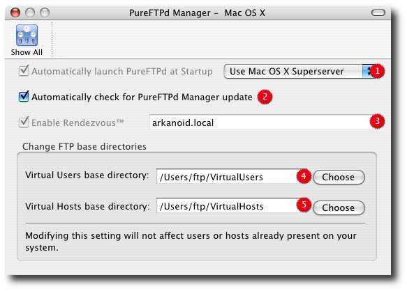

PureFTPd Manager - Mac OS X

Not only you will be able to start/stop your server from Mac OS X System Preferences (Sharing) but it will adjust your Mac firewall automatically. The restrictions you have with this method are that you cannot specify a different port (pure-ftpd will always be running on the standard FTP port (21) ) and you cannot change your Bonjour/Rendezvous name. Select the standalone mode to run pure-ftpd on a different port. But remember that you won't be able to control your ftp server through Mac OS X System Preferences anymore. 2. Check for new version of PureFTPd Manager when the program starts. 3. Enable/disable service announcement using Bonjour. 4. Default parent directory for your virtual users. 5. Default parent directory for your virtual hosts. |